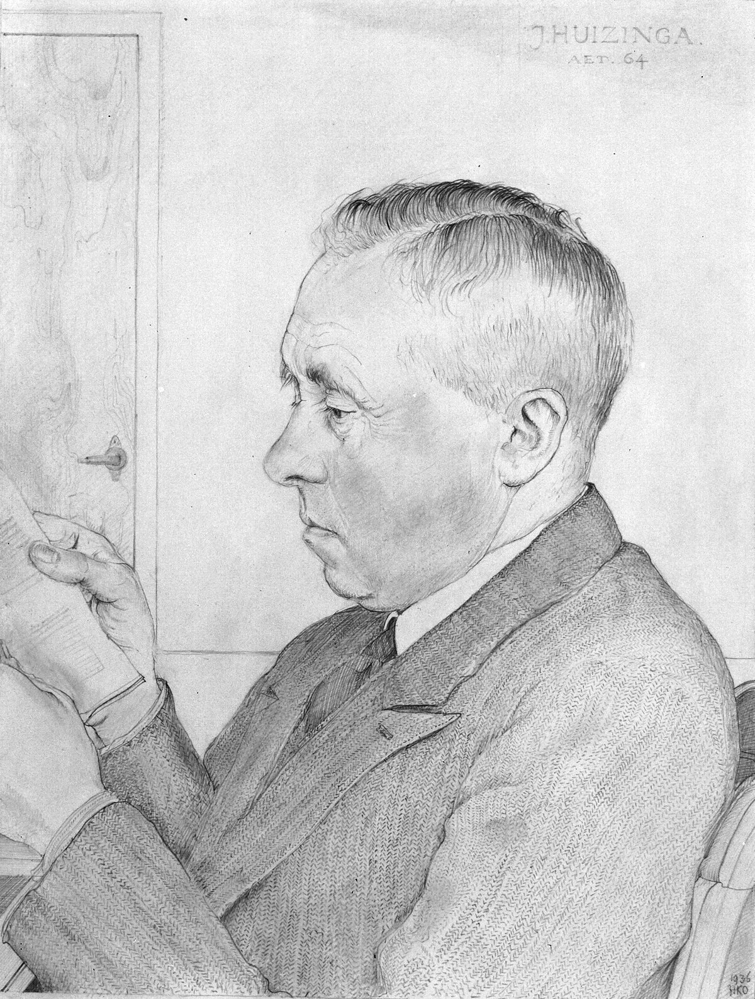

Central Questions
- What is a game — and what separates play from work?
- Do video games build or erode our moral character?
- Why does every generation fear the latest entertainment medium?
- Bernard Suits argues that in a perfect world, life would consist of games — is he right?
- If AI takes over most human labor, what gives our lives meaning?
What Is Play?
Games and play appear in every human culture. Long before cities or writing or agriculture, human beings played. We have dice carved from animal bones dating to 3000 BCE in ancient Mesopotamia. We have board games from Egypt, wrestling competitions from ancient Greece, and ball games from the pre-Columbian Americas. In 2007, archaeologists found evidence of a counting game in Jordan dating to 6000 BCE. The impulse to play seems to run deeper in us than almost anything we think of as distinctively civilized. Animals play too — puppies wrestle, dolphins toss objects in the ocean, ravens slide down snowy rooftops — but the human elaboration of play into structured games with rules, stakes, and stories has no parallel in the animal kingdom.
Yet philosophy has often been suspicious of play. Plato worried that poetry and mimicry corrupted the soul. The Protestant tradition tied virtue to productive labor and cast recreation as dangerous idleness. Even today, when someone says they "just play video games," the phrase carries a slight air of apology. This chapter argues that such suspicion is philosophically unjustified — and that games may, in fact, be among the most important things human beings do.

Key Thinker
Johan Huizinga (1872–1945)
Johan Huizinga was a Dutch cultural historian and rector of Leiden University who became one of the twentieth century's most provocative thinkers about culture and play. His 1938 masterwork Homo Ludens — "Man the Player" — argued that play is not a byproduct of culture but its very foundation. Before humans built temples or wrote law codes, Huizinga contended, they played — and the ritual, contest, and performance embedded in play were the seedbed from which law, religion, art, and science grew.
Huizinga lived through the catastrophe of World War II under Nazi occupation. He was arrested in 1942 and held as a hostage until his death in 1945. His experience of totalitarianism deepened his conviction that genuine play — voluntary, rule-governed, separate from the grinding machinery of power — was not a luxury but a form of human dignity.
His other major works include The Waning of the Middle Ages (1919), a landmark study of late medieval culture, and In the Shadow of Tomorrow (1935), a prescient diagnosis of the cultural pathologies that would soon produce fascism.
The Magic Circle
Huizinga's most influential contribution to the philosophy of games is the concept of the magic circle: the boundary that separates the space of play from ordinary life. When two people sit down to play chess, something remarkable happens. They enter a space governed by rules that have no force outside it — a pawn cannot be promoted in real life, a bishop cannot move only on diagonals while crossing a street. Within the circle, these rules are absolute. Outside it, they are nothing.
The Magic Circle
Huizinga's term for the bounded, rule-governed space of play that is temporarily separate from ordinary life. Within the magic circle, special rules apply and special meanings attach to actions that would be meaningless or different outside it. Examples include a chess board, a football field, a theater stage, and a negotiating table governed by diplomatic protocol.
The magic circle has six characteristic features that Huizinga identifies across cultures and throughout history:
- Voluntary: Genuine play cannot be commanded. Forced play ceases to be play.
- Separate: Play is bounded in time and space — it has a beginning and an end.
- Uncertain: The outcome cannot be known in advance; genuine stakes exist within the circle.
- Unproductive: Play creates no goods or wealth — it is an end in itself.
- Rule-governed: Play operates under conventions that suspend ordinary life.
- Make-believe: Play involves a shared pretense that distinguishes it from "real" life.
One striking implication of Huizinga's framework is that many activities we do not typically call "games" fit the magic circle description. Courtroom procedure, diplomatic protocol, religious ritual, and even scientific peer review all share features of play: they are bounded, rule-governed spaces in which special meanings apply. Huizinga's point is not that these activities are trivial — quite the opposite. He argues that the playful spirit that animates them is precisely what gives them their power.
Defining Games
Huizinga gave us a rich description of play, but he left an important question unanswered: what precisely makes something a game rather than just any rule-governed activity? The Canadian philosopher Bernard Suits spent decades working on exactly this question, and his answer remains the most precise and philosophically rigorous definition of games ever proposed.
Key Thinker
Bernard Suits (1925–2007)
Bernard Suits was a Canadian philosopher at the University of Waterloo who devoted much of his career to a single, apparently simple question: what is a game? His 1978 book The Grasshopper: Games, Life and Utopia — written in the form of a Socratic dialogue between the Grasshopper of Aesop's fable and his ant-like interlocutors — is one of the most original works of analytic philosophy of the twentieth century.
Suits argued that playing a game is "the voluntary attempt to overcome unnecessary obstacles." This deceptively simple formula conceals enormous philosophical depth. It implies that what is distinctive about games is not their outcomes but their structure: the voluntary acceptance of constraints that make achievement harder rather than easier, for the sake of the activity itself.
Suits extended his analysis into a broader philosophy of human life, arguing that in a utopia — a world where all material needs were automatically satisfied — the only rational activities remaining would be games. This argument has acquired new urgency in an era of AI-driven automation.
Suits' Three Elements
Suits' definition of a game has three components, each of which is necessary and together they are sufficient:
Suits' Three Elements of a Game
(1) Prelusory goal: a specific state of affairs achievable independently of the game — for example, getting a small ball into a hole in the ground. (2) Constitutive rules: rules that forbid the most efficient means of achieving the prelusory goal — for example, rules that require you to use a club rather than carry the ball. (3) Lusory attitude: the player's voluntary acceptance of the constitutive rules because doing so makes the activity possible — accepting unnecessary obstacles as the condition for playing at all.
The golf example is illuminating. The prelusory goal — getting the ball into the hole — could be trivially achieved by picking up the ball and dropping it in. But that would not be golf. The constitutive rules require you to use a club, to start at a designated tee, to count every stroke. These rules make the task harder. And crucially, the golfer accepts them willingly — not because they are forced to, but because the rules are what constitute the activity they want to engage in. Without the rules, there is no golf, only a ball and a hole.
What's the Argument?
Suits' Definition of a Game
- A game involves a prelusory goal: a state of affairs that could, in principle, be achieved without the game's rules.
- The game's constitutive rules forbid the most efficient means of achieving that goal, making the task artificially harder.
- The player adopts the lusory attitude: voluntarily accepting these unnecessary obstacles because doing so enables the activity.
- Therefore, playing a game is "the voluntary attempt to overcome unnecessary obstacles."
Implication: Games are intrinsically valuable — not because of what they produce but because of the kind of voluntary, structured striving they constitute.
Caillois' Four Types
While Suits gave us the most precise definition of a game, the French sociologist Roger Caillois offered the most useful taxonomy. In Man, Play and Games (1958), Caillois identified four fundamental types of play, each present in cultures across history:
| Type | Greek/Latin Term | Description | Examples |
|---|---|---|---|
| Competition | Agôn | Skill-based contest between players | Chess, tennis, esports |
| Chance | Alea | Outcomes determined by fortune | Dice, roulette, loot boxes |
| Mimicry | Mimicry | Role-playing and simulation | Dress-up, RPGs, theater |
| Vertigo | Ilinx | Pursuit of disorientation or sensation | Rollercoasters, racing games, VR |
One reason video games are so compelling is that they can combine all four types simultaneously. A game like Elden Ring involves skill-based competition (agôn) against enemies, random loot drops (alea), immersive role-playing in a fantasy world (mimicry), and an intense, sometimes overwhelming sensory experience (ilinx). Few other human activities can layer all four modes of play together.
Nguyen: Games as an Art Form for Agency
The philosopher C. Thi Nguyen has proposed a striking extension of Suits' framework. In Games: Agency as Art (2020), he argues that games are not just structured activities — they are an art form for sculpting the player's agency itself. Where a novelist shapes emotions and a painter shapes perception, a game designer shapes what it feels like to have certain goals, to face certain choices, to experience certain forms of striving.
Key Thinker
C. Thi Nguyen (b. 1978)
C. Thi Nguyen is a philosopher at the University of Utah whose work focuses on games, trust, and the epistemology of testimony. His 2020 book Games: Agency as Art argues that games are a distinctive art form — not for their stories or their visuals, but for their mechanics. A game designer sculpts agency: they determine what it feels like to pursue goals, make decisions, and experience success and failure within a particular structure.
Nguyen also developed the influential concept of value capture: the process by which gamification takes the rich, complex values of some activity and replaces them with a simplified, measurable score. A teacher who optimizes for student evaluation scores has undergone value capture. A social media user who optimizes for likes has undergone value capture. The simplicity of the score crowds out the complexity of what the activity was originally for.
Nguyen's concept of value capture has important implications beyond games. When a company gamifies its customer service platform with points and badges, it invites employees to adopt a simplified set of game-values — maximize the score — in place of the richer values the job was meant to serve. When universities measure teaching quality by student evaluation numbers, professors who "play the game" optimize for likability rather than learning. Nguyen argues that recognizing when our values have been captured by simplified scoring systems is one of the most important critical skills of the twenty-first century.
state achievable
without rules] --> B[Constitutive Rules
forbid the most
efficient means] B --> C[Lusory Attitude
voluntary acceptance
of obstacles] C --> D[The Game
voluntary striving
for its own sake] D --> E{Value?} E -->|Genuine play| F[Agency as Art
Nguyen] E -->|Gamification| G[Value Capture
score replaces
real purpose]
Moral Panic and the Work Ethic
Before evaluating whether video games actually harm players, it is worth stepping back to ask a prior question: why do new entertainment media so reliably produce moral panics? The pattern is remarkably consistent across history. Each new medium triggers the same fears — that it will corrupt the young, undermine productivity, erode moral character, and distract society from serious pursuits. And each time, those fears turn out to be substantially overstated, even as genuine concerns are eventually identified.
| Era | Medium | The Fear | What Actually Happened |
|---|---|---|---|
| 1800s–1900s | Penny dreadfuls, pulp novels | Corrupted working-class youth; glorified crime | Became mainstream popular fiction |
| 1950s | Comic books | Senate hearings; linked to juvenile delinquency (Seduction of the Innocent) | Comics code was repressive but industry survived; no delinquency link found |
| 1980s | Dungeons & Dragons | Occult influence; linked to suicide and "satanic panic" | No credible link; D&D now mainstream family entertainment |
| 1990s–2010s | Video games | Violence, addiction, social isolation | Evidence mixed and contested; see Section 4 |
| 2010s–present | Social media | Anxiety, depression, political polarization, addiction | Some evidence of harm, especially for adolescent girls; research ongoing |
Understanding why this pattern recurs requires understanding the cultural context that makes new entertainment media threatening. The sociologist Max Weber identified one deep source of that anxiety.
Key Thinker
Max Weber (1864–1920)
Max Weber was a German sociologist whose 1905 work The Protestant Ethic and the Spirit of Capitalism argued that the rise of capitalism in Northern Europe was deeply connected to the Calvinist theological doctrine of predestination. If salvation was predetermined and unknowable, anxious Calvinists sought reassurance in worldly success as a sign of divine favor. Hard work, frugality, and the systematic reinvestment of profits became not just economically useful but spiritually necessary.
Weber argued that this religious mentality became secularized into what he called the Protestant work ethic: the cultural norm that treats productive labor as intrinsically virtuous and idleness as morally suspect. Even in a secular age, this ethic persists — in the guilt many people feel about "wasting time," in the cultural prestige of being busy, and in the implicit suspicion that people who play (especially games) are not contributing their share.
Weber's analysis helps explain why entertainment media reliably triggers moral panic: play is the paradigmatic form of socially unproductive activity, and in cultures shaped by the Protestant work ethic, it carries a persistent taint of moral irresponsibility.
The philosophical question Weber's analysis raises is whether the equation of virtue with productive labor has any philosophical foundation — or whether it is merely a historical accident, a contingent cultural norm that emerged from a specific theological tradition. As we will see when we examine Suits' philosophy, there are strong reasons to think that the work ethic's suspicion of play has things exactly backwards.
Case Study
The 1954 Senate Hearings on Comic Books
In 1954, the United States Senate held hearings on the relationship between comic books and juvenile delinquency, inspired by the psychiatrist Fredric Wertham's book Seduction of the Innocent. Wertham claimed that comics glorified violence, promoted sexual deviance, and directly caused criminal behavior in young readers. Batman and Robin were cited as a "homosexual fantasy." Wonder Woman was said to promote lesbianism. The hearings produced national panic and led to the industry-self-imposed Comics Code Authority, which effectively censored American comics for decades.
Subsequent scholarship found that Wertham's research was deeply flawed: he cherry-picked cases, misrepresented his methods, and never established any causal link between comics and delinquency. The moral panic was real; the danger was largely invented. When we encounter similar claims about video games, social media, or any new medium, the comics episode is a useful caution.
Video Games: Harm or Benefit?
Video games are now the largest entertainment industry in the world, with revenues exceeding $180 billion annually and around three billion players worldwide. The questions about their effects — on attention, aggression, social skills, and moral character — are therefore not marginal concerns. They matter for public policy, for parenting, and for understanding what three billion people are doing with significant portions of their time.
The Violence Research Debate
The most prominent concern about video games has been a potential link to aggression and violence. The psychologist Craig Anderson conducted a series of influential meta-analyses claiming to demonstrate that exposure to violent video games increases aggressive thoughts, feelings, and behavior. For a period in the 2000s and early 2010s, Anderson's conclusions were widely cited in policy discussions and seemed to represent a scientific consensus.
Pro-Argument
The Case for Harm (Anderson's Position)
- Multiple meta-analyses across dozens of studies find correlations between violent game exposure and increased aggressive thoughts, feelings, and behaviors.
- Experimental studies show short-term increases in aggression measures following violent game play.
- Longitudinal studies suggest cumulative effects over time.
Conclusion: Violent video games pose a genuine public health concern, especially for children and adolescents.
Objection
The Methodological Critique (Ferguson's Response)
- The aggression measures used in laboratory studies (e.g., assigning hot sauce to a stranger, blasting noise through headphones) have poor ecological validity — they do not predict real-world violence.
- Anderson's meta-analyses include publication bias: studies finding no effect are less likely to be published.
- At the population level, increased video game use over the past 30 years has coincided with a decline in youth violence, not an increase.
- Cross-national comparisons show no correlation between video game consumption and violent crime rates.
Conclusion: The evidence for a causal link between video games and real-world violence is weak. The moral panic has outrun the science.
The current scientific consensus, reflected in reviews by the American Psychological Association and others, is more cautious than either side suggests. There is evidence of short-term effects on measured aggression in laboratory settings, but the relationship between laboratory aggression measures and real-world violence is poorly established. The dramatic claims made in the 2000s have not held up to methodological scrutiny.
Gaming Disorder
A separate concern — distinct from violence — is whether games can become genuinely addictive. In 2019, the World Health Organization added "Gaming Disorder" to the International Classification of Diseases (ICD-11), defining it as a pattern of gaming behavior characterized by impaired control, increasing priority given to games over other activities, and continuation despite negative consequences, persisting for at least twelve months and causing significant impairment.
Case Study
Loot Boxes and the Gambling Debate
A loot box is a randomized in-game reward purchased with real money: the player pays, say, $2.99 and receives a random assortment of in-game items, some common, some rare. The psychological structure is identical to a slot machine: variable ratio reinforcement, the most powerful schedule of reinforcement known, producing persistent behavior even when rewards are infrequent.
In 2018, Belgium and the Netherlands determined that loot boxes constitute gambling under existing law and banned them in games accessible to minors. Electronic Arts' FIFA "Ultimate Team" mode — which generates hundreds of millions of dollars annually through randomized player packs — was effectively prohibited in both countries. The UK Gambling Commission declined to regulate loot boxes as gambling, but British MPs have called for reconsideration.
The loot box debate illustrates Nguyen's concept of value capture in action: game mechanics designed to maximize monetization can colonize players' motivations, replacing genuine play with compulsive spending behavior.
Psychologists applying Ryan and Deci's self-determination theory (SDT) have offered a more nuanced account of problematic gaming. SDT holds that healthy motivation requires satisfying three basic psychological needs: competence, autonomy, and relatedness. Games that satisfy these needs — that give players a genuine sense of mastery, meaningful choices, and real social connection — tend to produce engaged play without harmful dependence. Games that frustrate these needs while manipulating players through compulsion loops tend to produce the anxious, compulsive play associated with gaming disorder. The problem, on this view, is not games as such but specific design choices that undermine rather than support psychological wellbeing.
The Case for Benefit
Jane McGonigal, a game designer and researcher at the Institute for the Future, has made the most sustained case that games are not merely harmless but actively beneficial. Her 2011 book Reality Is Broken argues that well-designed games satisfy deep human needs more reliably than most real-world activities, delivering four features that foster flourishing: urgent optimism (the belief that an epic challenge is achievable), social fabric (relationships strengthened through cooperation), blissful productivity (the satisfaction of hard work), and epic meaning (a sense of participating in something larger than oneself).
Case Study
Foldit: When Games Solve Real Problems
In 2008, a team of biochemists and game designers at the University of Washington launched Foldit, a game that asked players to fold proteins into their optimal three-dimensional configurations. Protein folding is crucial for understanding disease and designing drugs, but it is also computationally intractable — the number of possible configurations is astronomical.
Within three years, Foldit players had solved a protein structure that had stumped automated algorithms for fifteen years: the structure of a retroviral protease involved in the replication of AIDS-like viruses. The solution, published in Nature Structural and Molecular Biology in 2011, came from a group of gamers in just ten days. McGonigal cites this as evidence that gamers' unique combination of persistence, spatial reasoning, and collaborative problem-solving can be directed toward genuine scientific problems.
The philosopher Ian Bogost has developed a different argument for the significance of video games. In Persuasive Games (2007), Bogost argues that games have a distinctive rhetorical power he calls procedural rhetoric: the ability to make arguments through the rules and mechanics of the game itself, not just through its story or visuals. Games like Spent — which simulates the impossible financial choices faced by people living in poverty — and Papers, Please — in which players work as border control officers in a dystopian state — make ethical arguments through their mechanics that could not be made as powerfully in any other medium. Playing Spent for twenty minutes conveys something about poverty that no amount of prose description can fully replicate.
Virtue Ethics and Video Games
Chapter 2 introduced Aristotle's account of virtue: character is formed by habituation, by what we repeatedly do. We become brave by doing brave things, just by doing just things, honest by telling the truth. This framework raises an obvious and important question about games: if we spend thousands of hours practicing the attitudes and responses that games reward, what kind of character are we forming?
The question cuts both ways. Critics worry that games rewarding aggression, exploitation, or deception habituate players to those responses. Defenders counter that the magic circle insulates in-game behavior from real-world character formation — the competitive brutality of Call of Duty no more habituates players to real-world violence than watching a thriller film habituates viewers to murder. The empirical research reviewed in Section 4 provides some support for the defenders: the link between violent game play and real-world aggression has proven elusive.
Pro-Argument
Cooperative Games as Virtue Laboratories
Cooperative multiplayer games may actively cultivate virtue. For example:
- Overcooked demands real-time coordination, communication under pressure, and patience — players must subordinate their own pace to the team's rhythm.
- Portal 2 (co-op mode) requires trust, joint problem-solving, and genuine perspective-taking — you cannot solve the puzzles without understanding your partner's vantage point.
- Among Us exercises social deduction, the ability to read others, and the management of trust under uncertainty.
These games require other people to succeed. They are not practice for solipsism but for collaboration, and the virtues they exercise are directly transferable to social life outside the magic circle.
Key Thinker
Shannon Vallor (b. 1972)
Shannon Vallor is a philosopher and AI ethicist at the University of Edinburgh whose 2016 book Technology and the Virtues develops a technomoral virtue framework for the digital age. Drawing on Aristotle, Confucius, and Buddhist ethics, Vallor argues that our character is continuously shaped by our technological practices, and that in an era of rapid technological change, deliberate attention to virtue cultivation is more important than ever.
Vallor's framework is particularly relevant to gaming because she identifies specific technomoral virtues that must be actively cultivated in a digitally mediated world — virtues that games can either foster or undermine depending on their design and how they are played.
| Virtue | How Games Can Foster It | How Games Can Undermine It |
|---|---|---|
| Honesty | Games built on genuine skill assessment; sports codes of honor | Cheating culture; deceptive marketing in free-to-play games |
| Courage | Taking risks, persisting through difficulty, learning from failure | Toxic "gamer" identity; harassment of vulnerable players |
| Empathy | Perspective-taking in role-playing; cooperative games | Dehumanizing enemy NPCs; anonymous online cruelty |
| Justice | Shared goals in cooperative games; fair-play norms | Toxic competition; sexism and harassment in gaming culture |
| Self-regulation | Managing resources, deferring rewards, strategic patience | Addictive design loops that undermine impulse control |
| Humility | Accepting loss, learning from failure, respecting opponents | Rage-quitting; "gamer" entitlement culture |
Case Study
Esports: Achievement or Exploitation?
Professional gaming — esports — is a $1.8 billion industry. Esports athletes can earn substantial incomes competing in games like League of Legends, Counter-Strike, and Valorant before audiences of millions. The League Championship Series, broadcast on ESPN, draws audiences comparable to traditional sports. The 2019 Fortnite World Cup paid out $30 million in prizes.
But the physical and psychological demands are severe. Esports athletes typically train 10–14 hours per day, leading to repetitive strain injuries (carpal tunnel syndrome, tendinitis) at rates comparable to traditional athletes. Careers peak around age 24–26; most professional players are retired by 30. Burnout is endemic. Critics argue that the industry exploits young players' passion while providing minimal labor protections, health support, or pension provision.
The esports case raises a question relevant to Suits' definition: is professional esports still a game in Suits' sense? When the lusory attitude — the voluntary acceptance of obstacles for the sake of playing — is replaced by economic necessity, does the activity retain its character as play?
Suits' Utopia: Life as a Game
Suits' most profound contribution to philosophy is not his definition of a game but the argument he builds on top of it. In The Grasshopper: Games, Life and Utopia, Suits uses the structure of Aesop's fable to raise the deepest question in the philosophy of leisure: if the Ants work to survive, what is the point of surviving?
Case Study
The Grasshopper and the Ants
In Aesop's fable, the Grasshopper plays all summer while the Ants work, and when winter comes the Ants are warm and fed while the Grasshopper freezes. The moral is clear: be industrious, not idle.
Suits reimagines the fable. His Grasshopper, dying in winter while the Ants are warm and fed, is unrepentant. He spent the summer playing — and this was not failure. His challenge to the Ants cuts deeper than it first appears: What are you working for? The Ants work to survive — but what is the point of surviving? To be comfortable enough to do... what? They work to rest, and rest to work. The Grasshopper, Suits argues, has understood something the Ants have not: the end of all the working and surviving and accumulating is leisure, and the highest form of leisure is play.
"The Grasshopper lives as if the Utopia were already here."
The Utopian Paradox
Suits constructs a thought experiment: imagine a world where every material need is automatically satisfied — by perfect technology, or by artificial intelligence. No one needs to work. What do people do?
What's the Argument?
Suits' Utopian Paradox
- In utopia, all instrumental activities — activities done as means to other ends — are handled automatically.
- The only remaining activities are those pursued for their own sake — intrinsically valuable activities.
- Games are activities pursued via voluntarily accepted obstacles — they are, by definition, not the most efficient path to their prelusory goals.
- An activity with a goal that could be achieved more efficiently by other means, but where those means are deliberately rejected for the sake of the activity itself, just is the structure of a game.
Conclusion: In utopia, all rational activity takes the form of games. "The very problems of life become the game of life."
This argument has a counterintuitive implication: obstacles in life are not problems to be eliminated but conditions for meaning. A life with all difficulty removed — all challenges automatically solved, all goals automatically achieved — would not be paradise. It would be meaningless. The Grasshopper's point is that striving is not a means to an end; it is the end. This is why chess, which produces nothing, has been played for fifteen centuries — not despite but because of its artificial difficulty.
Objection
The Hollow Obstacle Problem
Can you sustain the lusory attitude — genuinely caring about the outcome — when you know the obstacle was invented purely so you could overcome it? There seems to be something self-undermining about deliberately constructed challenges: if I know that the puzzle was designed for me to solve, that the dragon was placed there for me to slay, can I really bring to it the full weight of genuine engagement?
Meaningful striving may require genuine stakes. The farmer's crop actually feeds people. The surgeon's skill actually saves lives. The soldier's courage protects real communities. Can a game — where no one is actually helped and nothing is actually at risk — carry the same weight?
Suits' response: The lusory attitude is itself a form of genuine commitment. When a chess player cares about the game, their caring is real, even if the stakes are artificial. The chess board becomes, within the magic circle, a space of genuine meaning — not borrowed from external stakes but generated by the activity itself.
Keynes and the Leisure Problem
Suits' utopian argument acquired an unexpected empirical dimension from an economist writing nearly half a century earlier. In 1930, John Maynard Keynes published "Economic Possibilities for Our Grandchildren," predicting that by approximately 2030, technological productivity would allow for fifteen-hour work weeks. The real challenge of the future, Keynes thought, would not be economic scarcity but the problem of leisure: how to "live wisely and agreeably and well" when material needs were largely met.
We are considerably more productive than Keynes imagined in 1930 — yet most people in wealthy countries work more hours than they did in 1950, not fewer. Productivity gains have not been converted into leisure but into higher incomes and higher consumption. Why?
- Inequality: Productivity gains went disproportionately to capital owners, not distributed as leisure time to workers.
- Work ethic: In cultures shaped by Weber's Protestant ethic, identity remains tightly bound to productive labor — leisure can feel like failure.
- The Suits problem: We are genuinely uncertain what we would do with leisure. Keynes' prediction assumed that the problem of how to fill time would be easy; Suits' analysis suggests it is in fact the hardest problem of all.
AI, Post-Work, and the Meaning of Life
Chapter 8 examined how AI transforms labor. The question here is philosophical rather than economic: if AI handles most productive work, what gives human life meaning? This is not primarily a question about income — various proposals for universal basic income address the distribution problem. It is a question about purpose, identity, and flourishing.
Three broad responses have emerged in the philosophical literature:
productive work] --> B{What gives
life meaning?} B --> C[Position 1:
The Grasshopper Was Right
Games deliver meaning
more reliably than work] B --> D[Position 2:
The Skeptical View
Manufactured obstacles
feel hollow without stakes] B --> E[Position 3:
Augmentation View
Human-AI collaboration
is itself a new game] C --> F[Welcome post-work
Suits + McGonigal] D --> G[Resist it, or ensure
genuine stakes remain] E --> H[Redesign work so
it retains game-like meaning]
Position 1
The Grasshopper Was Right: McGonigal's Optimism
If games already deliver meaning more reliably than work, a post-work world need not be a crisis. McGonigal imagines lives spent in creative games: art, athletics, philosophy, music, collaborative science. Her example of Foldit — where gamers solved a protein structure that stumped automated algorithms for fifteen years — suggests that human playful ingenuity can be directed toward genuine problems even in a post-scarcity context.
The historical precedent is the Athenian ideal: a free citizen, liberated from labor by the labor of others, engaged in politics, philosophy, and art. Aristotle endorsed this ideal as the highest form of human life. The question is whether it can be generalized democratically — whether the conditions that made it available only to a leisure class can be made available to everyone through technology.
The equation work = virtue is, as Weber showed, a historical accident rooted in a specific theological tradition, not a metaphysical necessity. There is no reason in principle why a life centered on play cannot be a fully excellent human life.
Position 2
The Skeptical View: Can Manufactured Obstacles Satisfy?
Suits' utopia may require sustained self-deception: caring about winning while knowing that winning is ultimately unimportant. Two concerns compound this worry:
- Stakes: Meaningful striving may need genuine consequences — the farmer's crop actually feeds people, the surgeon's skill actually saves lives, the teacher's insight actually changes how a student sees the world. Games produce only winners and losers within the magic circle, and the circle dissolves when the game ends.
- Inequality: Post-work utopia may be for some only. For many, the end of work means poverty and precarity — not the Grasshopper's liberated play but the anxiety of economic insecurity. A philosophy of games-as-meaning requires a just distribution of the material conditions that make genuine play possible.
Position 3
Human-AI Collaboration as a New Kind of Game
The sharpest objection to both preceding positions is that they assume the work/play dichotomy is fixed. But in a world of human-AI collaboration, that dichotomy may dissolve. Consider:
- A scientist whose AI generates hypotheses can focus entirely on designing and interpreting experiments — the creative, judgment-intensive aspects that cannot be automated.
- A teacher whose AI handles routine assessment can focus on mentorship, relationship, and the unpredictable moments of genuine intellectual encounter.
- A doctor whose AI handles diagnostic pattern-matching can focus on the complex, contextual, ethically laden conversations that require human judgment.
The human contribution in these scenarios resembles play in Suits' sense: it is voluntary, creative, rule-governed engagement pursued partly for its own sake, not merely as a means to external ends. The work/play boundary dissolves not because work disappears but because it becomes more like play.
Vallor's framework adds a dimension that all three positions require. The question is not only "what will we do?" but "what kind of people will we become?" The virtues cultivated in games — persistence, creativity, humility, care for others, the ability to accept failure and try again — are exactly the virtues needed in an AI-transformed world. Whether we welcome, resist, or redesign the post-work future, we will need to have cultivated the character to navigate it well.
Thought Questions
- Suits says the Grasshopper is right: playing games is the ideal human life. Do you agree? What counts as a "game" in this extended sense — would art, philosophy, or athletics qualify?
- Is there a morally significant difference between playing Stardew Valley (a farming simulation) and actually farming? Does it matter that no food is produced in the game?
- Can you identify a moment when your values were "captured" by a game or gamified system — when you found yourself optimizing for a score rather than the underlying purpose?
- If AI makes most work unnecessary, should we welcome the Grasshopper's world, resist it, or try to redesign work so it retains meaning even when unnecessary?
- The Athenian leisure class had slaves to make their play possible. Does technology offer a genuinely different path — or does a post-work world for some always rest on exploitation of others?
Summary
This chapter has traced games from the philosophy of Huizinga's magic circle through Suits' precise definition and his provocative utopian argument, through the moral panics surrounding video games, through Aristotle and Vallor on virtue formation, and finally to the AI-and-meaning question that frames the entire course. The thread running through all these discussions is the same: games are not a retreat from serious human concerns but one of their deepest expressions. The question of what games are, what they do to us, and what role they might play in a post-work future is not a marginal question in computing ethics. It may be the central one.
Key Points
- Huizinga's magic circle: Play is a voluntary, rule-governed, bounded space separate from ordinary life. Its features — separation, uncertainty, unproductivity, make-believe — appear in games across all human cultures and throughout history.
- Suits' definition: A game requires a prelusory goal, constitutive rules that forbid the most efficient means of achieving it, and the lusory attitude — the voluntary acceptance of unnecessary obstacles. Playing a game is "the voluntary attempt to overcome unnecessary obstacles."
- Caillois' four types: Play divides into agôn (competition), alea (chance), mimicry (role-playing), and ilinx (vertigo). Video games are uniquely powerful partly because they can combine all four simultaneously.
- Nguyen's agency-as-art: Games sculpt the player's agency itself — they determine what it feels like to have certain goals and face certain choices. But gamification risks value capture: replacing rich human purposes with simplified, measurable scores.
- The moral panic pattern: Each new entertainment medium (penny dreadfuls, comics, D&D, video games, social media) triggers the same fears about youth and character. The fears are usually substantially overstated; Weber's Protestant work ethic provides one explanation for why play reliably provokes moral anxiety.
- Video game effects: The link between violent games and real-world violence has not been established. Gaming disorder is real but affects a minority of players. Self-determination theory suggests the key variable is whether games satisfy or frustrate the basic needs of competence, autonomy, and relatedness.
- Suits' Grasshopper argument: In utopia — or a post-AI world — all instrumental activities are automated, and the only rational remaining activities are those pursued for their own sake. Games have exactly this structure. Therefore, in utopia, all rational activity takes the form of games.
- The hollow obstacle problem: The deepest objection to Suits is that manufactured obstacles cannot carry the weight of genuine meaning. Suits' response is that the lusory attitude — genuine caring about the game — generates real meaning within the magic circle, not borrowed from external stakes.
- Vallor's technomoral virtues: Games can foster or undermine honesty, courage, empathy, justice, self-regulation, and humility depending on their design. The virtues cultivated (or eroded) by our gaming practices are exactly those we will need in an AI-transformed world.
- Three views on post-work meaning: The Suits/McGonigal view welcomes a play-centered life; the skeptical view worries that manufactured obstacles feel hollow without genuine stakes; the augmentation view holds that human-AI collaboration already resembles structured play and dissolves the work/play dichotomy.